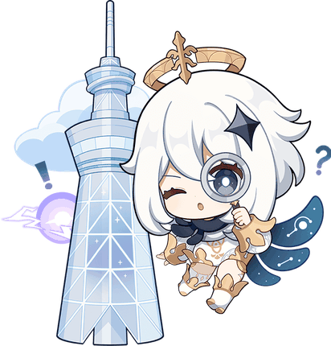
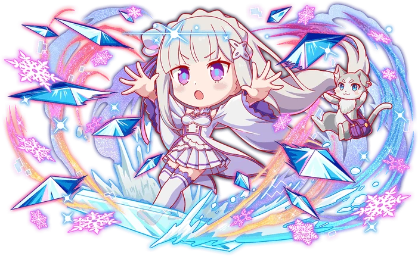
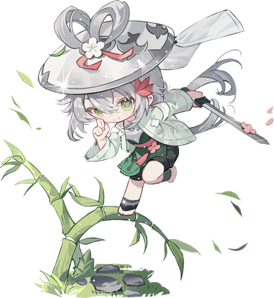
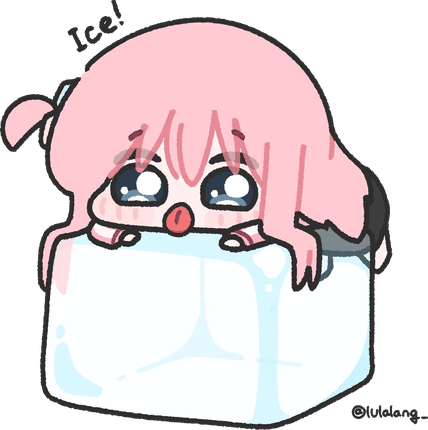
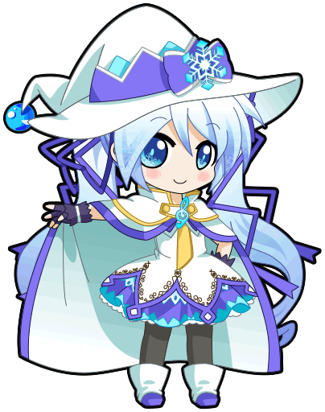

身体替你说的那些话
考前一晚胃疼、被点名时手心出汗、心跳快、肩颈僵、莫名其妙想吐……这些"哪儿都没坏、但就是不舒服"的时候，你有多少？这份问卷用来看看，心理压力是怎么变成身体信号的。
填写问卷 →考前一晚，肚子先疼。
被点名的时候，手先抖。
困到极点，反而睡不着。
我们花了一学期，想弄清楚这些反应到底在替我们说什么。
有个人做题做到一半，突然把笔放下，去了走廊。
不是不会做。
是手在抖，他不想让同桌看见。
回来的时候，卷子被别人翻过去看了一眼。他没说话，坐下，继续写。
这件事没有人记得，包括他自己。
但他的手，记得。
我们要做的，就是把这种"没人记得"的时刻，一个一个捡回来，看清楚。

考前一晚，你把闹钟调早了十分钟。
你知道那十分钟没用。你只是想让自己觉得，至少做了点什么。
然后躺下。十一点，十二点，一点。
灯关了，手机扣过去了，脑子没关。
第二天早上，胃先醒了。
它比你先紧张。
你后来吐出来的不是早饭，是攒了一整晚的紧张。
后来才知道紧张的时候，身体会自动切到"准备逃跑"那一挡：心跳变快、血流往肌肉和大脑跑、消化系统被临时关掉。这套机制本来是用来对付老虎的。它分不清老虎和月考，所以考场在你身体里，就成了一片草原。
而胃和肠子跟大脑之间一直有一条热线在通话——迷走神经和激素来回传话，所以情绪一波动，肠胃第一个知道。
至于"适度紧张发挥最好"这个说法，确实有研究支持，但后来被用得太满、太万金油了。更靠谱的版本是：难题面前要冷静，简单的活稍微紧一点反而快。数学大题和涂答题卡，需要的状态本来就不一样。
小声说：深呼吸有用——但前提是别一边深呼吸，一边还在心里默背公式。

卷子发下来，你第一眼看的是分数。
然后才开始看错在哪。
可就在那三分钟里，你心里已经有了结论：我天生就学不好。
奇怪的是，这个结论不是这次考试给的。
它来自更早的某一次、某几次、很多次。来自那些你很努力了、但结果还是一样的时候。
你不是放弃了数学，你是放弃了"努力会有用"这件事。
后来才知道如果一个人反复发现"我做什么都改变不了结果"，他会慢慢不再尝试——哪怕后来机会真的来了，也懒得动。
（顺带说一句：提出这个概念的两位学者，在 2016 年自己发文修订了它。教科书上那个版本其实已经更新过了。我们查资料的时候核过。）
更要紧的是"怎么解释失败"。把失败归到改不了的地方（我笨、我天生不行），比归到还能动的地方（这次没复习到那个题型），更容易让人放弃，也更容易消沉。
小声说："我这次没复习到那个题型"听着像自我安慰。但它给你留了个下一步。区别就在这——一句话堵死未来，一句话还开着门。

班级聚餐，你被安排在最里面的位置。
菜很好吃。你也真的在吃。
中途有人朝这边看了一眼。
你立刻把手放慢了。
接下来二十分钟，你都在想：刚才那个动作是不是很奇怪。
那一眼只花了对方一秒。它在你脑子里待了二十分钟。
后来才知道"不喜欢热闹"和"害怕被人评价"，是两件事。前者是性格——独处能回血，人多了掉电，不用治，也没什么好同情的。后者是焦虑：你其实想跟人说话，但特别怕被否定，于是要么躲，要么硬撑，全程难受。
有个数字我们查到的时候挺意外——这类焦虑最常开始的年龄，大约是 13 岁。也就是初一初二。
（各家研究的数字差挺多，跟测评工具和样本都有关系。所以我们只说趋势，不打保票。）
至于"大家都在看我"的感觉，2000 年有个很实在的实验：让人穿着印了过气歌手头像的 T 恤走进教室，然后问他——你觉得有多少人注意到你的衣服？他猜 46%，实际只有 23%。而且看完三秒就忘了。
小声说：别人没你想的那么在意你。这话听着有点凉，但想通了之后特别松快——你不是被忽视，你是被放过了。

老师问：「这道题大家听明白了吗？」
一片沉默。
你也没懂。
但你也跟着沉默了。
然后下课铃响，二十三个人带着同一个坑，各回各家。
没人举手的时候，不举手也不是你的错。那是房间里所有人的共同决定。
后来才知道1951 年有个经典实验：让被试在一群人明显错了的时候，选"相信大家"还是"相信自己眼睛"。判断的还只是几根明显长短不同的线段。
结果，关键那些题上，被试平均有 1/3 跟着一起错。而全程一次都没被带跑的，只有大约四分之一。
最值得想的是这点：那个实验里没有惩罚，没有威胁，错了也没人骂你。也就是说，从众根本不需要压力。只要"大家都这样"这四个字，就够了。
小声说：从众不是缺点。它是人给自己找安全感的省电模式，没有它我们连过马路都费劲。要警惕的是另一件事——你已经不知道自己想要什么，只知道自己跟上了什么。
躺下了。灯关了。手机也扣过去了。
然后节目开始。
第一集，《今天下午我说的那句话是不是很蠢》。
第二集，《那个人当时笑了是不是在笑我》。
第三集，《我小学二年级干的蠢事，现在想起来还是想钻地缝》。
门外有人喊：早点睡。
你说：我在反思。
真的反思是有结尾的。你这个没有。它只是循环播放。
后来才知道反复地、被动地咀嚼自己的痛苦，但不去解决它——这种状态跟更高的情绪低落风险有关。麻烦的是它和睡眠会互相加码：睡前脑子太警觉，就睡不着；睡不着，第二天情绪调节的余量就变少；余量变少，当天晚上又更容易继续想。
你不是睡不着才胡思乱想，你是胡思乱想才睡不着。
所以分界线不在你想了多久，而在这句话有没有出口："我下次可以怎么做"——有出口；"我为什么这么糟"——没有出口。
小声说：睡前把没想完的事写在一张纸上，摆在床头。它就不会一直亮着灯了。
（这也是我们在问卷里最想收数据的地方。）

衣柜翻到第三件，你终于放弃：「算了，穿什么都一样。」
然后出门前最后一秒，你还是回头看了一眼镜子。
那不是爱美。那是你在确认"我到底是谁"。
后来才知道青春期有件不太公平的事：身体变化的速度，快过心理适应的速度。身高、体重、体型、皮肤、声音，在短短几年里集中改写。而"我是个什么样的人"这个答案，还在加载中。
所以你会格外在意别人怎么看你。心理学里有个说法叫"以为台下坐满了观众"——好像总有一双双眼睛在盯着自己。甚至会觉得：我的感受这么特别，没人能懂。
这两种感觉不是"想太多"，是自我意识长得太快造成的正常反应，通常会随着长大慢慢退下去。
再往深一层，人其实是靠"想象别人怎么看我"来认识自己的。所以青春期对镜子的执着，本质上不是爱美——是在找一个能确认自己的回声。
声明一句：本课题不评价任何人的外貌，也不给任何减肥、塑形建议。我们关心的是身体焦虑怎么影响情绪和日常，不是"你够不够好看"。这条线我们守得很死。
一句话能看完的东西，往往比一篇文章记得久。
| 一句话 | 出处（想深挖再查） |
|---|---|
| 没做完的事会在脑子里亮着灯。所以"先做 5 分钟就停"，比"逼自己坐一小时"更容易继续。 | 蔡格尼克效应 |
| "你外表开朗但内心敏感"能让九成人觉得"这就是我"。觉得准，不等于它懂你。 | 巴纳姆效应 |
| 先答应"帮我拿支笔"，再答应"帮我写作业"的成功率高得多。 | 登门槛效应 |
| 老师"以为你很行"，你可能真的变行。 | 罗森塔尔效应 |
| 一张卷子没交，接下来三张也不想交了。 | 破窗效应 |
| 同一句道理讲到第三遍，效果变成负数。 | 超限效应 |
| 让人脱下外套的是暖风，不是北风。 | 南风效应 |
| 让你难受的往往不是那件事，而是你对它的解释。 | 情绪 ABC 理论 |
读到这，问你一句：上面六段里，有没有哪一段，你看着看着慢了一下？
如果有——那正好。下面这份问卷就是为你做的。我们不是想研究你，我们只是想知道，到底有多少人跟我们一样。
大约 3 分钟。全部匿名：不问姓名、学号、班级，识别不到任何人。随时可以关掉，不会有任何后果——我们根本不知道你是谁。
考前一晚胃疼、被点名时手心出汗、心跳快、肩颈僵、莫名其妙想吐……这些"哪儿都没坏、但就是不舒服"的时候，你有多少？这份问卷用来看看，心理压力是怎么变成身体信号的。
填写问卷 →本网站是高一16班研究性学习小组的课题成果展示平台，研究方向为高中生的心理压力与心身反应。
研究目的：了解本校高中生在学业、社交与作息情境中的心理压力，如何通过身体感受表现出来，形成一份可供同学阅读的科普报告。
数据来源：本页一份匿名第三方问卷导出的群体统计数据，以及公开心理学文献与教材。
问卷使用声明：参与完全自愿，可随时退出；不收集姓名、学号等可识别信息；数据仅用于本课题统计分析，不公开原始数据、不用于商业用途。本课题不提供任何诊断或治疗建议。